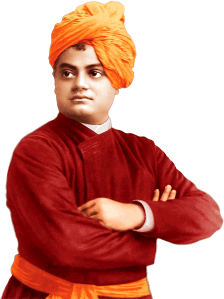

|  | Swami VivekanandaJanuary12, 1863 to July 4, 1902 |
Swami Vivekananda was a Hindu monk and one of the most celebrated spiritual leaders of India. He was more than just a spiritual mind; he was a prolific thinker, great orator and passionate patriot. He carried on the free-thinking philosophy of his guru, Ramakrishna Paramhansa forward into a new paradigm. He worked tirelessly towards betterment of the society, in servitude of the poor and needy, dedicating his all for his country. He was responsible for the revival of Hindu spiritualism and established Hinduism as a revered religion on world stage. His message of universal brotherhood and self-awakening remains relevant especially in the current backdrop of widespread political turmoil around the world. The young monk and his teachings have been an inspiration to many, and his words have become goals of self-improvement especially for the youth of the country. For this very reason, his birthday, January 12, is celebrated as the National Youth Day in India.
Born Narendranath Dutta, into an affluent Bengali family in Calcutta, Vivekananda was one of the eight children of Vishwanath Dutta and Bhuvaneshwari Devi. He was born on January 12, 1863, on the occasion of Makar Sankranti. Father Vishwanath was a successful attorney with considerable influence in society. Narendranath’s mother Bhuvaneshwari was a woman endowed with a strong, God-fearing mind who had a great impact on her son. As a young boy, Narendranath displayed sharp intellect. His mischievous nature belied his interest in music, both instrumental as well as vocal. He excelled in his studies as well, first at the Metropolitan institution, and later at the Presidency College in Calcutta. By the time he graduated from the college, he had acquired a vast knowledge of different subjects. He was active in sports, gymnastics, wrestling and body building. He was an avid reader and read up on almost everything under the sun. He perused the Hindu scriptures like the Bhagvad Gita and the Upanishads on one hand, while on the other hand he studied western philosophy, history and spirituality by David Hume, Johann Gottlieb Fichte and Herbert Spencer.